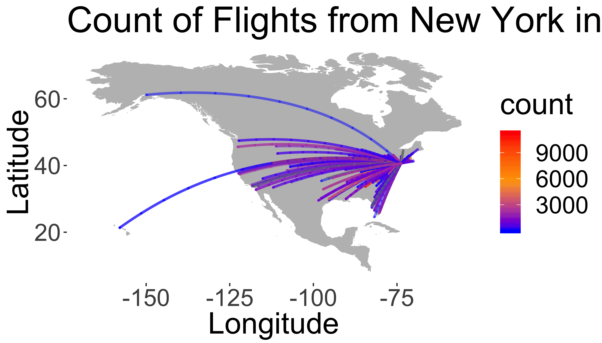

Data Wrangling
Download the PDF of the presentation
The R Script associated with this page is available here. Download this file and open it (or copy-paste into a new script) with RStudio so you can follow along.
RStudio Shortcuts
Running code
ctrl-R(orcommand-R) to run current line- Highlight
codein script and runctrl-R(orcommand-R) to run selection - Buttons:

Switching windows
ctrl-1: script windowctrl-2: console window
Try to run today’s script without using your mouse/trackpad
Data wrangling
Useful packages: tidyverse
Cheat sheets on website for Data Wrangling
library(tidyverse)Remember use install.packages("tidyverse") to install a new package.
Example operations from here
New York City Flights
Data from US Bureau of Transportation Statistics (see ?nycflights13)
library(nycflights13)Check out the flights object
head(flights)## # A tibble: 6 x 19
## year month day dep_time sched_dep_time dep_delay arr_time
## <int> <int> <int> <int> <int> <dbl> <int>
## 1 2013 1 1 517 515 2 830
## 2 2013 1 1 533 529 4 850
## 3 2013 1 1 542 540 2 923
## 4 2013 1 1 544 545 -1 1004
## 5 2013 1 1 554 600 -6 812
## 6 2013 1 1 554 558 -4 740
## # ... with 12 more variables: sched_arr_time <int>, arr_delay <dbl>,
## # carrier <chr>, flight <int>, tailnum <chr>, origin <chr>, dest <chr>,
## # air_time <dbl>, distance <dbl>, hour <dbl>, minute <dbl>,
## # time_hour <dttm>Object Structure
Check out data structure with glimpse()
glimpse(flights)## Observations: 336,776
## Variables: 19
## $ year <int> 2013, 2013, 2013, 2013, 2013, 2013, 2013, 2013,...
## $ month <int> 1, 1, 1, 1, 1, 1, 1, 1, 1, 1, 1, 1, 1, 1, 1, 1,...
## $ day <int> 1, 1, 1, 1, 1, 1, 1, 1, 1, 1, 1, 1, 1, 1, 1, 1,...
## $ dep_time <int> 517, 533, 542, 544, 554, 554, 555, 557, 557, 55...
## $ sched_dep_time <int> 515, 529, 540, 545, 600, 558, 600, 600, 600, 60...
## $ dep_delay <dbl> 2, 4, 2, -1, -6, -4, -5, -3, -3, -2, -2, -2, -2...
## $ arr_time <int> 830, 850, 923, 1004, 812, 740, 913, 709, 838, 7...
## $ sched_arr_time <int> 819, 830, 850, 1022, 837, 728, 854, 723, 846, 7...
## $ arr_delay <dbl> 11, 20, 33, -18, -25, 12, 19, -14, -8, 8, -2, -...
## $ carrier <chr> "UA", "UA", "AA", "B6", "DL", "UA", "B6", "EV",...
## $ flight <int> 1545, 1714, 1141, 725, 461, 1696, 507, 5708, 79...
## $ tailnum <chr> "N14228", "N24211", "N619AA", "N804JB", "N668DN...
## $ origin <chr> "EWR", "LGA", "JFK", "JFK", "LGA", "EWR", "EWR"...
## $ dest <chr> "IAH", "IAH", "MIA", "BQN", "ATL", "ORD", "FLL"...
## $ air_time <dbl> 227, 227, 160, 183, 116, 150, 158, 53, 140, 138...
## $ distance <dbl> 1400, 1416, 1089, 1576, 762, 719, 1065, 229, 94...
## $ hour <dbl> 5, 5, 5, 5, 6, 5, 6, 6, 6, 6, 6, 6, 6, 6, 6, 5,...
## $ minute <dbl> 15, 29, 40, 45, 0, 58, 0, 0, 0, 0, 0, 0, 0, 0, ...
## $ time_hour <dttm> 2013-01-01 05:00:00, 2013-01-01 05:00:00, 2013...dplyr “verbs”
select()andrename(): Extract existing variablesfilter()andslice(): Extract existing observationsarrange()distinct()mutate()andtransmute(): Derive new variablessummarise(): Change the unit of analysissample_n()andsample_frac()
Useful select functions
- “
-” Select everything but - “
:” Select range contains()Select columns whose name contains a character stringends_with()Select columns whose name ends with a stringeverything()Select every columnmatches()Select columns whose name matches a regular expressionnum_range()Select columns named x1, x2, x3, x4, x5one_of()Select columns whose names are in a group of namesstarts_with()Select columns whose name starts with a character string
select() examples
Select only the year, month, and day columns:
select(flights,year, month, day)## # A tibble: 336,776 x 3
## year month day
## <int> <int> <int>
## 1 2013 1 1
## 2 2013 1 1
## 3 2013 1 1
## 4 2013 1 1
## 5 2013 1 1
## 6 2013 1 1
## 7 2013 1 1
## 8 2013 1 1
## 9 2013 1 1
## 10 2013 1 1
## # ... with 336,766 more rowsselect() examples
Select everything except the tailnum:
select(flights,-tailnum)## # A tibble: 336,776 x 18
## year month day dep_time sched_dep_time dep_delay arr_time
## <int> <int> <int> <int> <int> <dbl> <int>
## 1 2013 1 1 517 515 2 830
## 2 2013 1 1 533 529 4 850
## 3 2013 1 1 542 540 2 923
## 4 2013 1 1 544 545 -1 1004
## 5 2013 1 1 554 600 -6 812
## 6 2013 1 1 554 558 -4 740
## 7 2013 1 1 555 600 -5 913
## 8 2013 1 1 557 600 -3 709
## 9 2013 1 1 557 600 -3 838
## 10 2013 1 1 558 600 -2 753
## # ... with 336,766 more rows, and 11 more variables: sched_arr_time <int>,
## # arr_delay <dbl>, carrier <chr>, flight <int>, origin <chr>,
## # dest <chr>, air_time <dbl>, distance <dbl>, hour <dbl>, minute <dbl>,
## # time_hour <dttm>Select all columns containing the string "time":
select(flights,contains("time"))## # A tibble: 336,776 x 6
## dep_time sched_dep_time arr_time sched_arr_time air_time
## <int> <int> <int> <int> <dbl>
## 1 517 515 830 819 227
## 2 533 529 850 830 227
## 3 542 540 923 850 160
## 4 544 545 1004 1022 183
## 5 554 600 812 837 116
## 6 554 558 740 728 150
## 7 555 600 913 854 158
## 8 557 600 709 723 53
## 9 557 600 838 846 140
## 10 558 600 753 745 138
## # ... with 336,766 more rows, and 1 more variable: time_hour <dttm>You can also rename columns with select()
select(flights,year,carrier,destination=dest)## # A tibble: 336,776 x 3
## year carrier destination
## <int> <chr> <chr>
## 1 2013 UA IAH
## 2 2013 UA IAH
## 3 2013 AA MIA
## 4 2013 B6 BQN
## 5 2013 DL ATL
## 6 2013 UA ORD
## 7 2013 B6 FLL
## 8 2013 EV IAD
## 9 2013 B6 MCO
## 10 2013 AA ORD
## # ... with 336,766 more rowsfilter() observations
Filter all flights that departed on on January 1st:
filter(flights, month == 1, day == 1)## # A tibble: 842 x 19
## year month day dep_time sched_dep_time dep_delay arr_time
## <int> <int> <int> <int> <int> <dbl> <int>
## 1 2013 1 1 517 515 2 830
## 2 2013 1 1 533 529 4 850
## 3 2013 1 1 542 540 2 923
## 4 2013 1 1 544 545 -1 1004
## 5 2013 1 1 554 600 -6 812
## 6 2013 1 1 554 558 -4 740
## 7 2013 1 1 555 600 -5 913
## 8 2013 1 1 557 600 -3 709
## 9 2013 1 1 557 600 -3 838
## 10 2013 1 1 558 600 -2 753
## # ... with 832 more rows, and 12 more variables: sched_arr_time <int>,
## # arr_delay <dbl>, carrier <chr>, flight <int>, tailnum <chr>,
## # origin <chr>, dest <chr>, air_time <dbl>, distance <dbl>, hour <dbl>,
## # minute <dbl>, time_hour <dttm>Base R method
This is equivalent to the more verbose code in base R:
flights[flights$month == 1 & flights$day == 1, ]## # A tibble: 842 x 19
## year month day dep_time sched_dep_time dep_delay arr_time
## <int> <int> <int> <int> <int> <dbl> <int>
## 1 2013 1 1 517 515 2 830
## 2 2013 1 1 533 529 4 850
## 3 2013 1 1 542 540 2 923
## 4 2013 1 1 544 545 -1 1004
## 5 2013 1 1 554 600 -6 812
## 6 2013 1 1 554 558 -4 740
## 7 2013 1 1 555 600 -5 913
## 8 2013 1 1 557 600 -3 709
## 9 2013 1 1 557 600 -3 838
## 10 2013 1 1 558 600 -2 753
## # ... with 832 more rows, and 12 more variables: sched_arr_time <int>,
## # arr_delay <dbl>, carrier <chr>, flight <int>, tailnum <chr>,
## # origin <chr>, dest <chr>, air_time <dbl>, distance <dbl>, hour <dbl>,
## # minute <dbl>, time_hour <dttm>Compare with dplyr method:
filter(flights, month == 1, day == 1)Filter the flights data set to keep only evening flights (dep_time after 1600) in June.
filter(flights,dep_time>1600,month==6)## # A tibble: 10,117 x 19
## year month day dep_time sched_dep_time dep_delay arr_time
## <int> <int> <int> <int> <int> <dbl> <int>
## 1 2013 6 1 1602 1505 57 1721
## 2 2013 6 1 1602 1605 -3 1824
## 3 2013 6 1 1602 1610 -8 1748
## 4 2013 6 1 1603 1610 -7 1839
## 5 2013 6 1 1603 1545 18 1726
## 6 2013 6 1 1605 1608 -3 1742
## 7 2013 6 1 1605 1600 5 1801
## 8 2013 6 1 1605 1614 -9 1801
## 9 2013 6 1 1608 1600 8 1807
## 10 2013 6 1 1609 1615 -6 1817
## # ... with 10,107 more rows, and 12 more variables: sched_arr_time <int>,
## # arr_delay <dbl>, carrier <chr>, flight <int>, tailnum <chr>,
## # origin <chr>, dest <chr>, air_time <dbl>, distance <dbl>, hour <dbl>,
## # minute <dbl>, time_hour <dttm>Other boolean expressions
filter() is similar to subset() except it handles any number of filtering conditions joined together with &.
You can also use other boolean operators, such as OR (“|”):
filter(flights, month == 1 | month == 2)## # A tibble: 51,955 x 19
## year month day dep_time sched_dep_time dep_delay arr_time
## <int> <int> <int> <int> <int> <dbl> <int>
## 1 2013 1 1 517 515 2 830
## 2 2013 1 1 533 529 4 850
## 3 2013 1 1 542 540 2 923
## 4 2013 1 1 544 545 -1 1004
## 5 2013 1 1 554 600 -6 812
## 6 2013 1 1 554 558 -4 740
## 7 2013 1 1 555 600 -5 913
## 8 2013 1 1 557 600 -3 709
## 9 2013 1 1 557 600 -3 838
## 10 2013 1 1 558 600 -2 753
## # ... with 51,945 more rows, and 12 more variables: sched_arr_time <int>,
## # arr_delay <dbl>, carrier <chr>, flight <int>, tailnum <chr>,
## # origin <chr>, dest <chr>, air_time <dbl>, distance <dbl>, hour <dbl>,
## # minute <dbl>, time_hour <dttm>Filter the flights data set to keep only flights where the distance is greater than 1000 OR the air_time is more than 100
filter(flights,distance>1000|air_time>100)## # A tibble: 222,479 x 19
## year month day dep_time sched_dep_time dep_delay arr_time
## <int> <int> <int> <int> <int> <dbl> <int>
## 1 2013 1 1 517 515 2 830
## 2 2013 1 1 533 529 4 850
## 3 2013 1 1 542 540 2 923
## 4 2013 1 1 544 545 -1 1004
## 5 2013 1 1 554 600 -6 812
## 6 2013 1 1 554 558 -4 740
## 7 2013 1 1 555 600 -5 913
## 8 2013 1 1 557 600 -3 838
## 9 2013 1 1 558 600 -2 753
## 10 2013 1 1 558 600 -2 849
## # ... with 222,469 more rows, and 12 more variables: sched_arr_time <int>,
## # arr_delay <dbl>, carrier <chr>, flight <int>, tailnum <chr>,
## # origin <chr>, dest <chr>, air_time <dbl>, distance <dbl>, hour <dbl>,
## # minute <dbl>, time_hour <dttm>Select rows with slice():
slice(flights, 1:10)## # A tibble: 10 x 19
## year month day dep_time sched_dep_time dep_delay arr_time
## <int> <int> <int> <int> <int> <dbl> <int>
## 1 2013 1 1 517 515 2 830
## 2 2013 1 1 533 529 4 850
## 3 2013 1 1 542 540 2 923
## 4 2013 1 1 544 545 -1 1004
## 5 2013 1 1 554 600 -6 812
## 6 2013 1 1 554 558 -4 740
## 7 2013 1 1 555 600 -5 913
## 8 2013 1 1 557 600 -3 709
## 9 2013 1 1 557 600 -3 838
## 10 2013 1 1 558 600 -2 753
## # ... with 12 more variables: sched_arr_time <int>, arr_delay <dbl>,
## # carrier <chr>, flight <int>, tailnum <chr>, origin <chr>, dest <chr>,
## # air_time <dbl>, distance <dbl>, hour <dbl>, minute <dbl>,
## # time_hour <dttm>arrange() rows
arrange() is similar to filter() except it reorders instead of filtering.
arrange(flights, year, month, day)## # A tibble: 336,776 x 19
## year month day dep_time sched_dep_time dep_delay arr_time
## <int> <int> <int> <int> <int> <dbl> <int>
## 1 2013 1 1 517 515 2 830
## 2 2013 1 1 533 529 4 850
## 3 2013 1 1 542 540 2 923
## 4 2013 1 1 544 545 -1 1004
## 5 2013 1 1 554 600 -6 812
## 6 2013 1 1 554 558 -4 740
## 7 2013 1 1 555 600 -5 913
## 8 2013 1 1 557 600 -3 709
## 9 2013 1 1 557 600 -3 838
## 10 2013 1 1 558 600 -2 753
## # ... with 336,766 more rows, and 12 more variables: sched_arr_time <int>,
## # arr_delay <dbl>, carrier <chr>, flight <int>, tailnum <chr>,
## # origin <chr>, dest <chr>, air_time <dbl>, distance <dbl>, hour <dbl>,
## # minute <dbl>, time_hour <dttm>Base R method:
flights[order(flights$year, flights$month, flights$day), ]Descending order: desc()
arrange(flights, desc(arr_delay))## # A tibble: 336,776 x 19
## year month day dep_time sched_dep_time dep_delay arr_time
## <int> <int> <int> <int> <int> <dbl> <int>
## 1 2013 1 9 641 900 1301 1242
## 2 2013 6 15 1432 1935 1137 1607
## 3 2013 1 10 1121 1635 1126 1239
## 4 2013 9 20 1139 1845 1014 1457
## 5 2013 7 22 845 1600 1005 1044
## 6 2013 4 10 1100 1900 960 1342
## 7 2013 3 17 2321 810 911 135
## 8 2013 7 22 2257 759 898 121
## 9 2013 12 5 756 1700 896 1058
## 10 2013 5 3 1133 2055 878 1250
## # ... with 336,766 more rows, and 12 more variables: sched_arr_time <int>,
## # arr_delay <dbl>, carrier <chr>, flight <int>, tailnum <chr>,
## # origin <chr>, dest <chr>, air_time <dbl>, distance <dbl>, hour <dbl>,
## # minute <dbl>, time_hour <dttm>Base R method:
flights[order(desc(flights$arr_delay)), ]Distinct: Find distinct rows
distinct(
select(flights,carrier)
)## # A tibble: 16 x 1
## carrier
## <chr>
## 1 UA
## 2 AA
## 3 B6
## 4 DL
## 5 EV
## 6 MQ
## 7 US
## 8 WN
## 9 VX
## 10 FL
## 11 AS
## 12 9E
## 13 F9
## 14 HA
## 15 YV
## 16 OOMutate: Derive new variables
Adds columns with calculations based on other columns.
Average air speed (miles/hour):
mutate(flights,ave_speed=distance/(air_time/60))%>%
select(distance, air_time,ave_speed)## # A tibble: 336,776 x 3
## distance air_time ave_speed
## <dbl> <dbl> <dbl>
## 1 1400 227 370.
## 2 1416 227 374.
## 3 1089 160 408.
## 4 1576 183 517.
## 5 762 116 394.
## 6 719 150 288.
## 7 1065 158 404.
## 8 229 53 259.
## 9 944 140 405.
## 10 733 138 319.
## # ... with 336,766 more rowsChaining Operations
Learn to performing multiple operations sequentially with a pipe character (%>%)
- Group by a variable
- Select some columns
- Summarize observations
- Filter by results
With temporary objects:
a1 <- group_by(flights, year, month, day)
a2 <- select(a1, arr_delay, dep_delay)## Adding missing grouping variables: `year`, `month`, `day`a3 <- summarise(a2,
arr = mean(arr_delay, na.rm = TRUE),
dep = mean(dep_delay, na.rm = TRUE))
a4 <- filter(a3, arr > 30 | dep > 30)
head(a4)## # A tibble: 6 x 5
## # Groups: year, month [3]
## year month day arr dep
## <int> <int> <int> <dbl> <dbl>
## 1 2013 1 16 34.2 24.6
## 2 2013 1 31 32.6 28.7
## 3 2013 2 11 36.3 39.1
## 4 2013 2 27 31.3 37.8
## 5 2013 3 8 85.9 83.5
## 6 2013 3 18 41.3 30.1If you don’t want to save the intermediate results: wrap the function calls inside each other:
filter(
summarise(
select(
group_by(flights, year, month, day),
arr_delay, dep_delay
),
arr = mean(arr_delay, na.rm = TRUE),
dep = mean(dep_delay, na.rm = TRUE)
),
arr > 30 | dep > 30
)## Adding missing grouping variables: `year`, `month`, `day`## # A tibble: 49 x 5
## # Groups: year, month [11]
## year month day arr dep
## <int> <int> <int> <dbl> <dbl>
## 1 2013 1 16 34.2 24.6
## 2 2013 1 31 32.6 28.7
## 3 2013 2 11 36.3 39.1
## 4 2013 2 27 31.3 37.8
## 5 2013 3 8 85.9 83.5
## 6 2013 3 18 41.3 30.1
## 7 2013 4 10 38.4 33.0
## 8 2013 4 12 36.0 34.8
## 9 2013 4 18 36.0 34.9
## 10 2013 4 19 47.9 46.1
## 11 2013 4 22 37.8 30.6
## 12 2013 4 25 33.7 23.3
## 13 2013 5 8 39.6 43.2
## 14 2013 5 23 62.0 51.1
## 15 2013 5 24 24.3 30.3
## 16 2013 6 2 26.1 34.0
## 17 2013 6 10 28.0 30.6
## 18 2013 6 13 63.8 45.8
## 19 2013 6 18 37.6 36.0
## 20 2013 6 24 51.2 47.2
## 21 2013 6 25 41.5 43.1
## 22 2013 6 26 27.3 30.6
## 23 2013 6 27 44.8 40.9
## 24 2013 6 28 45.0 48.8
## 25 2013 6 30 43.5 44.2
## 26 2013 7 1 58.3 56.2
## 27 2013 7 7 40.3 36.6
## 28 2013 7 8 29.6 37.3
## 29 2013 7 9 31.3 30.7
## 30 2013 7 10 59.6 52.9
## 31 2013 7 22 62.8 46.7
## 32 2013 7 23 45.0 44.7
## 33 2013 7 28 49.8 37.7
## 34 2013 8 1 36.0 34.6
## 35 2013 8 8 55.5 43.3
## 36 2013 8 9 43.3 34.7
## 37 2013 8 22 30.0 33.6
## 38 2013 8 28 35.2 40.5
## 39 2013 9 2 45.5 53.0
## 40 2013 9 12 58.9 50.0
## 41 2013 10 7 39.0 39.1
## 42 2013 10 11 18.9 31.2
## 43 2013 12 5 51.7 52.3
## 44 2013 12 8 36.9 21.5
## 45 2013 12 9 42.6 34.8
## 46 2013 12 10 44.5 26.5
## 47 2013 12 14 46.4 28.4
## 48 2013 12 17 55.9 40.7
## 49 2013 12 23 32.2 32.3Arguments are distant from function -> difficult to read!
Chaining Operations
%>% (from the dplyr package) allows you to pipe together various commands.
x %>% f(y) turns into f(x, y)
So you can use it to rewrite multiple operations that you can read left-to-right, top-to-bottom:
flights %>%
group_by(year, month, day) %>%
select(arr_delay, dep_delay) %>%
summarise(
arr = mean(arr_delay, na.rm = TRUE),
dep = mean(dep_delay, na.rm = TRUE)
) %>%
filter(arr > 30 | dep > 30)## Adding missing grouping variables: `year`, `month`, `day`## # A tibble: 49 x 5
## # Groups: year, month [11]
## year month day arr dep
## <int> <int> <int> <dbl> <dbl>
## 1 2013 1 16 34.2 24.6
## 2 2013 1 31 32.6 28.7
## 3 2013 2 11 36.3 39.1
## 4 2013 2 27 31.3 37.8
## 5 2013 3 8 85.9 83.5
## 6 2013 3 18 41.3 30.1
## 7 2013 4 10 38.4 33.0
## 8 2013 4 12 36.0 34.8
## 9 2013 4 18 36.0 34.9
## 10 2013 4 19 47.9 46.1
## 11 2013 4 22 37.8 30.6
## 12 2013 4 25 33.7 23.3
## 13 2013 5 8 39.6 43.2
## 14 2013 5 23 62.0 51.1
## 15 2013 5 24 24.3 30.3
## 16 2013 6 2 26.1 34.0
## 17 2013 6 10 28.0 30.6
## 18 2013 6 13 63.8 45.8
## 19 2013 6 18 37.6 36.0
## 20 2013 6 24 51.2 47.2
## 21 2013 6 25 41.5 43.1
## 22 2013 6 26 27.3 30.6
## 23 2013 6 27 44.8 40.9
## 24 2013 6 28 45.0 48.8
## 25 2013 6 30 43.5 44.2
## 26 2013 7 1 58.3 56.2
## 27 2013 7 7 40.3 36.6
## 28 2013 7 8 29.6 37.3
## 29 2013 7 9 31.3 30.7
## 30 2013 7 10 59.6 52.9
## 31 2013 7 22 62.8 46.7
## 32 2013 7 23 45.0 44.7
## 33 2013 7 28 49.8 37.7
## 34 2013 8 1 36.0 34.6
## 35 2013 8 8 55.5 43.3
## 36 2013 8 9 43.3 34.7
## 37 2013 8 22 30.0 33.6
## 38 2013 8 28 35.2 40.5
## 39 2013 9 2 45.5 53.0
## 40 2013 9 12 58.9 50.0
## 41 2013 10 7 39.0 39.1
## 42 2013 10 11 18.9 31.2
## 43 2013 12 5 51.7 52.3
## 44 2013 12 8 36.9 21.5
## 45 2013 12 9 42.6 34.8
## 46 2013 12 10 44.5 26.5
## 47 2013 12 14 46.4 28.4
## 48 2013 12 17 55.9 40.7
## 49 2013 12 23 32.2 32.3Analyze by group with group_by()
Perform operations by group: mean departure delay by airport (origin)
flights %>%
group_by(origin) %>%
summarise(meanDelay = mean(dep_delay,na.rm=T))## # A tibble: 3 x 2
## origin meanDelay
## <chr> <dbl>
## 1 EWR 15.1
## 2 JFK 12.1
## 3 LGA 10.3Perform operations by group: mean and sd departure delay by airline (carrier)
flights %>%
group_by(carrier) %>%
summarise(meanDelay = mean(dep_delay,na.rm=T),
sdDelay = sd(dep_delay,na.rm=T))## # A tibble: 16 x 3
## carrier meanDelay sdDelay
## <chr> <dbl> <dbl>
## 1 9E 16.7 45.9
## 2 AA 8.59 37.4
## 3 AS 5.80 31.4
## 4 B6 13.0 38.5
## 5 DL 9.26 39.7
## 6 EV 20.0 46.6
## 7 F9 20.2 58.4
## 8 FL 18.7 52.7
## 9 HA 4.90 74.1
## 10 MQ 10.6 39.2
## 11 OO 12.6 43.1
## 12 UA 12.1 35.7
## 13 US 3.78 28.1
## 14 VX 12.9 44.8
## 15 WN 17.7 43.3
## 16 YV 19.0 49.2Flights from which origin airport go the farthest (on average)? Hint: Group by airport (origin) then calculate the maximum flight distance (distance).
flights %>%
group_by(origin) %>%
summarise(meanDist = mean(distance,na.rm=T))%>%
arrange(desc(meanDist))%>%
slice(1)%>%
select(origin)## # A tibble: 1 x 1
## origin
## <chr>
## 1 JFKWhich destination airport (dest) is the farthest (distance) from NYC?
flights %>%
arrange(desc(distance)) %>%
select(dest,distance) %>%
slice(1)## # A tibble: 1 x 2
## dest distance
## <chr> <dbl>
## 1 HNL 4983Which airport is that?
Combining data sets
dplyr join methods

left_join(a, b, by = "x1")Join matching rows from b to a.right_join(a, b, by = "x1")Join matching rows from a to b.inner_join(a, b, by = "x1")Retain only rows in both sets.full_join(a, b, by = "x1")Join data. Retain all values, all rows.
Left Join
left_join(a, b, by = "x1") Join matching rows from b to a.

Right Join
right_join(a, b, by = "x1") Join matching rows from a to b.

Inner Join
inner_join(a, b, by = "x1") Retain only rows in both sets.

Full Join
full_join(a, b, by = "x1") Join data. Retain all values, all rows.

flights%>%
select(-year,-month,-day,-hour,-minute,-dep_time,-dep_delay)%>%
glimpse()## Observations: 336,776
## Variables: 12
## $ sched_dep_time <int> 515, 529, 540, 545, 600, 558, 600, 600, 600, 60...
## $ arr_time <int> 830, 850, 923, 1004, 812, 740, 913, 709, 838, 7...
## $ sched_arr_time <int> 819, 830, 850, 1022, 837, 728, 854, 723, 846, 7...
## $ arr_delay <dbl> 11, 20, 33, -18, -25, 12, 19, -14, -8, 8, -2, -...
## $ carrier <chr> "UA", "UA", "AA", "B6", "DL", "UA", "B6", "EV",...
## $ flight <int> 1545, 1714, 1141, 725, 461, 1696, 507, 5708, 79...
## $ tailnum <chr> "N14228", "N24211", "N619AA", "N804JB", "N668DN...
## $ origin <chr> "EWR", "LGA", "JFK", "JFK", "LGA", "EWR", "EWR"...
## $ dest <chr> "IAH", "IAH", "MIA", "BQN", "ATL", "ORD", "FLL"...
## $ air_time <dbl> 227, 227, 160, 183, 116, 150, 158, 53, 140, 138...
## $ distance <dbl> 1400, 1416, 1089, 1576, 762, 719, 1065, 229, 94...
## $ time_hour <dttm> 2013-01-01 05:00:00, 2013-01-01 05:00:00, 2013...Let’s look at the airports data table (?airports for documentation):
glimpse(airports)## Observations: 1,458
## Variables: 8
## $ faa <chr> "04G", "06A", "06C", "06N", "09J", "0A9", "0G6", "0G7", ...
## $ name <chr> "Lansdowne Airport", "Moton Field Municipal Airport", "S...
## $ lat <dbl> 41.13047, 32.46057, 41.98934, 41.43191, 31.07447, 36.371...
## $ lon <dbl> -80.61958, -85.68003, -88.10124, -74.39156, -81.42778, -...
## $ alt <int> 1044, 264, 801, 523, 11, 1593, 730, 492, 1000, 108, 409,...
## $ tz <dbl> -5, -6, -6, -5, -5, -5, -5, -5, -5, -8, -5, -6, -5, -5, ...
## $ dst <chr> "A", "A", "A", "A", "A", "A", "A", "A", "U", "A", "A", "...
## $ tzone <chr> "America/New_York", "America/Chicago", "America/Chicago"...What is the name of the destination airport farthest from the NYC airports? Hints:
- Use a join to connect the
flightsdataset andairportsdataset. - Figure out which column connects the two tables.
- You may need to rename the column names before joining.
select(airports,
dest=faa,
destName=name)%>%
right_join(flights)%>%
arrange(desc(distance)) %>%
slice(1) %>%
select(destName)## Joining, by = "dest"## # A tibble: 1 x 1
## destName
## <chr>
## 1 Honolulu IntlToday’s task
Now complete the first task here by yourself or in small groups.
Extras
If you made it through the material above, here’s an example of some more ‘advanced’ coding to extract the geographic locations for all flights and plotting the connections as ‘great circles’ on a map. This is just meant as an example to illustrate how one might use these functions to perform a more advanced analysis and spatial visualization.
Join destination airports
library(geosphere)## Loading required package: splibrary(rgdal)## rgdal: version: 1.3-3, (SVN revision 759)
## Geospatial Data Abstraction Library extensions to R successfully loaded
## Loaded GDAL runtime: GDAL 2.1.3, released 2017/20/01
## Path to GDAL shared files: /Library/Frameworks/R.framework/Versions/3.4/Resources/library/rgdal/gdal
## GDAL binary built with GEOS: FALSE
## Loaded PROJ.4 runtime: Rel. 4.9.3, 15 August 2016, [PJ_VERSION: 493]
## Path to PROJ.4 shared files: /Library/Frameworks/R.framework/Versions/3.4/Resources/library/rgdal/proj
## Linking to sp version: 1.2-7library(maps)##
## Attaching package: 'maps'## The following object is masked from 'package:purrr':
##
## maplibrary(ggplot2)
library(sp)
library(rgeos)## rgeos version: 0.3-28, (SVN revision 572)
## GEOS runtime version: 3.6.1-CAPI-1.10.1 r0
## Linking to sp version: 1.2-7
## Polygon checking: TRUEdata=
select(airports,
dest=faa,
destName=name,
destLat=lat,
destLon=lon)%>%
right_join(flights)%>%
group_by(dest,
destLon,
destLat,
distance)%>%
summarise(count=n())%>%
ungroup()%>%
select(destLon,
destLat,
count,
distance)%>%
mutate(id=row_number())%>%
na.omit()## Joining, by = "dest"NYCll=airports%>%filter(faa=="JFK")%>%select(lon,lat) # get NYC coordinates
# calculate great circle routes
rts <- gcIntermediate(as.matrix(NYCll),
as.matrix(select(data,destLon,destLat)),
1000,
addStartEnd=TRUE,
sp=TRUE)
rts.ff <- fortify(
as(rts,"SpatialLinesDataFrame")) # convert into something ggplot can plot
## join with count of flights
rts.ff$id=as.integer(rts.ff$id)
gcircles <- left_join(rts.ff,
data,
by="id") # join attributes, we keep them all, just in caseNow build a basemap using data in the maps package.
base = ggplot()
worldmap <- map_data("world",
ylim = c(10, 70),
xlim = c(-160, -80))
wrld <- c(geom_polygon(
aes(long, lat, group = group),
size = 0.1,
colour = "grey",
fill = "grey",
alpha = 1,
data = worldmap
))Now draw the map using ggplot
base + wrld +
geom_path(
data = gcircles,
aes(
long,
lat,
col = count,
group = group,
order = as.factor(distance)
),
alpha = 0.5,
lineend = "round",
lwd = 1
) +
coord_equal() +
scale_colour_gradientn(colours = c("blue", "orange", "red"),
guide = "colourbar") +
theme(panel.background = element_rect(fill = 'white', colour = 'white')) +
labs(y = "Latitude", x = "Longitude",
title = "Count of Flights from New York in 2013")## Warning: Ignoring unknown aesthetics: order
Colophon
This exercise based on code from here.